4.23 Examples of ETS-NOCV analysis¶
Multiwfn manual, p.949–968. Images:
../imgs/.
2 // Calculate AOM via Hirshfeld partition Now AOM has been generated, you can input indices of two atoms to study DDD of the corresponding bond. For example, we input 1,6, which corresponds to the meta-para C-C bond, you will see
Result of 1(C ) -- 6(C )
f-: 0.067452
f+: 0.026544
g-: 0.017868
g+: 0.011229
f(1): -0.040907
f(2): -0.056481
The result is exactly the same as the corresponding data in Table 2 of the DDD original paper
except for g−, our result is twice the value in Table 2. Our result is correct, actually the g− in Table 2 should be doubled if it is evaluated strictly according to Eq. 29 of that paper.
4.23 Examples of ETS-NOCV analysis¶
Note: Chinese version of this section is my blog article “In-depth analysis of orbital interactions between fragments using the ETS-NOCV method in Multiwfn” (http://sobereva.com/609).
In this section several examples are given to illustrate how to use the ETS-NOCV (Extended Transition State - Natural Orbitals for Chemical Valence) analysis to study interfragment interaction. If you have not read Section 3.26, please read it first to gain relevant knowledge about theory of ETS-NOCV analysis and its implementation details in Multiwfn. The input files used in most of following examples are .fch files generated by Gaussian, other wavefunction files can also be used as long as they carry basis function information (see Section 2.5), for example you can use ORCA program to generate .molden file as input files.
It should be emphasized that without special reasons, please do not use diffuse functions, otherwise orbital energies may be unable to be obtained via the illustrated steps because Fock/Kohn-Sham matrix cannot be directly generated (in this case you have to provide a file containing Fock/Kohn-Sham matrix to Multiwfn, see Appendix 7), and the orbital compositions evaluated by SCPA method in the ETS-NOCV module may be highly unreasonable.
4.23.1 A simple closed-shell instance: CO-BH3
In this example, we use ETS-NOCV to study the interaction between CO and BH3 in COBH3 complex at B3LYP/6-31G* level, all relevant files can be found in “examples\ETS-NOCV\COBH3” folder. Since this is the first ETS-NOCV example, the process will be described very detailedly.
Preparing input files Initially, we need to generate wavefunction files for COBH3, CO and BH3, respectively. We first build geometry of COBH3, and then create an input file of geometry optimization task, the corresponding Gaussian input file is COBH3.gjf in “examples\ETS-NOCV\COBH3”. After running it and converting the resulting .chk file to .fch, you will have COBH3.fch.
Next, extracting Cartesian coordinates of CO and BH3 from the optimized COBH3 geometry, and then create corresponding input files of single point task, they are CO.gjf and BH3.gjf in “examples\ETS-NOCV\COBH3” folder. Not that in order to avoid automatic reorientation of the
geometry during Gaussian calculations, nosymm keyword must be used. After running the two fragment input files, you will have CO.fch and BH3.fch. Note that geometry optimization should not be applied to the two fragments, otherwise their coordinates will be inconsistent with those in complex.
The choice of electronic state of fragments, namely definition of reference state in ETS-NOCV analysis, is somewhat arbitrary. In the current example it is evident that CO and BH3 should be in singlet, this is not only because singlet is the most stable state of CO and BH3 in their isolated states, but also, more importantly, because they form bond with each other in a closed-shell state
(OC→BH3 is a coordinate bond).
Quantitative analysis of ETS-NOCV data Boot up Multiwfn and input examples\ETS-NOCV\COBH3\COBH3.fch
Multiwfn session
- Complex wavefunction file 23 — ETS-NOCV analysis
- 2 — Two fragments examples\ETS-NOCV\COBH3\CO.fch
examples\ETS-NOCV\COBH3\BH3.fch // Wavefunction file of fragment 2 Now information of NOCV orbitals and NOCV pairs is immediately printed:
--------------- Pair and NOCV orbital information --------------
There are totally 26 NOCV pairs and 51 NOCV orbitals
NOCV orbitals whose eigenvalues are smaller than 1.0E-03 are not shown
Note: Energies of NOCV orbitals have not been evaluated, so they are all zero
Pair Energy | Orbital Eigenvalue Energy | Orbital Eigenvalue Energy
1 0.00 1 0.56514 0.00 51 -0.56514 0.00
2 0.00 2 0.40205 0.00 50 -0.40205 0.00
3 0.00 3 0.40204 0.00 49 -0.40204 0.00
4 0.00 4 0.13007 0.00 48 -0.13007 0.00
5 0.00 5 0.03704 0.00 47 -0.03704 0.00
6 0.00 6 0.03703 0.00 46 -0.03703 0.00
7 0.00 7 0.03419 0.00 45 -0.03419 0.00
8 0.00 8 0.00834 0.00 44 -0.00834 0.00
9 0.00 9 0.00273 0.00 43 -0.00273 0.00
Sum of NOCV eigenvalues: 0.00000
The NOCV orbitals are sorted according to their eigenvalues from most positive to most negative. As you can see from the output, NOCV orbitals are in pairs, each two NOCV orbitals with opposite eigenvalues constitute a NOCV pair. For example, from the above output it can be seen that NOCV 3 and NOCV 49 have eigenvalues of 0.402 and -0.402, respectively, therefore they form a NOCV pair, namely NOCV pair 3. The sum of eigenvalues of all NOCV orbitals is exactly zero, since orbital interaction does not affect total number of electrons.
The NOCV pairs with larger magnitude of eigenvalue have larger underlying influence to the density difference caused by orbital interaction. As you can see from above information, there are as many as 26 NOCV pairs in total, however only nine of them are printed because of the default
printing threshold (i.e. absolute eigenvalue must be larger than 0.001), among which only pairs 1 to 4 have notable influences to density difference. Hence, you can study orbital interaction between CO and BH3 by only examining character of these NOCV pairs
Currently, the energies of NOCV orbitals and pairs have not been calculated yet. To calculate them, you should provide a file containing Fock matrix for HF case or Kohn-Sham (KS) matrix for DFT case, see Appendix 7 of this manual for detail. In this and following example we use a more convenient way, namely directly letting Multiwfn to generate Fock/KS matrix based on energies and coefficient matrix of molecular orbitals in the complex wavefunction COBH3.fch. So, we select option “-2 Generate Fock/KS matrix and evaluate NOCV orbital energies” in post-processing menu, then KS matrix is generated and NOCV energies are evaluated, after that NOCV information is printed on screen again, as shown below
Pair Energy | Orbital Eigenvalue Energy | Orbital Eigenvalue Energy
1 -77.88 1 0.56514 -120.88 51 -0.56514 16.93
2 -15.83 2 0.40205 -139.60 50 -0.40205 -100.22
3 -15.84 3 0.40204 -139.62 49 -0.40204 -100.23
4 -5.53 4 0.13007 -44.60 48 -0.13007 -2.06
5 -0.41 5 0.03704 -18.25 47 -0.03704 -7.19
6 -0.41 6 0.03703 -18.19 46 -0.03703 -7.13
7 -0.65 7 0.03419 21.33 45 -0.03419 40.48
8 -0.06 8 0.00834 -308.53 44 -0.00834 -301.42
9 -0.02 9 0.00273 -1661.86 43 -0.00273 -1655.69
Sum of NOCV eigenvalues: 0.00000
Sum of pair energies: -116.63 kcal/mol
As you can see from the output, this time each NOCV pair has a corresponding energy, the sum of energies of all NOCV pairs is -116.63 kcal/mol, indicating that the orbital interaction stabilizes
the complex by 116.63 kcal/mol, which will be referred to as \(\Delta E^{\mathrm{orb}}\). The energy of a NOCV pair is calculated as the sum of the products of the energy and eigenvalue of the NOCV orbitals belonging
orb ) is -77.88 kcal/mol, it is calculated as −120.88×0.5651 + 16.93×(−0.5651). to it. For example, the energy of NOCV pair 1 (Δ𝛦1
It is important to note that as mentioned in Section 3.26.2, since the Fock/KS matrix used in ETS-NOCV analysis in Multiwfn corresponds to the one built based on actual complex wavefunction rather than on the artificial transition state wavefunction, the printed “Sum of pair energies” is not the rigorous orbital interaction energy, and the printed NOCV energies are not exactly the corresponding ones in standard ETS-NOCV analysis. However, the discrepancy is found to be small in general and does not evidently affect the conclusion drawn from the analysis.
Probably you have noticed that NOCV pair 9 is composed of two NOCV orbitals with very negative energy, but the magnitude of pair energy is extremely small (-0.02 kcal/mol), what is the reason? In fact, the corresponding NOCV orbitals 9 and 43 are highly analogous to core orbitals (you can confirm this by visualizing orbital isosurfaces with very small isovalue), evidently their energies must be fairly negative as they feel very strong nuclear attractive potentials; however, since this kind of orbitals little participate in bonding, their eigenvalues must be very small, making energy of NOCV pair small enough to be fully ignored.
Visual analysis of NOCV pairs
Evidently, NOCV pair 1 (-77.9 kcal/mol) is the dominant contributor to the \(\Delta E^{\mathrm{orb}}\) (-116.6 kcal/mol), by visualizing isosurface of density of this pair one can gain an deeper insight about the interaction mechanism that plays the vital role in the complexation between CO and BH3. The contribution by NOCV pairs 2 and 3 is not fully negligible, hence by visualizing their densities we can understand which kind of interactions play a secondary role for the interfragment binding.
Now we choose option “2 Show isosurface of NOCV pair density”, then choose “2 Medium-quality grid”, which is fine enough for showing NOCV pair density of small systems like COBH3.
Now the NOCV information is printed again on screen to make it easier for users to choose the NOCV pair of interest. Next, we input 1 to calculate grid data of density of NOCV pair 1 and show its isosurface. At isovalue of 0.005 a.u., you can see below image in the GUI window (the arrow is manually added)
In this map, blue and green isosurfaces display the region where electron density is decreased and increased respectively due to the orbital interaction described by NOCV pair 1. Clearly, the NOCV pair 1 corresponds to significant electron displacement from the CO moiety to the BH3 moiety. The amount of transferred electron corresponds to the absolute eigenvalue of this NOCV pair, namely 0.565. Occurrence of this kind of interaction is naturally expected since CO has rich electrons and tends to donate electrons while BH3 is an electron-deficient species and tends to accept electrons by
its unoccupied orbital located at boron. Because this CO→BH3 donation interaction is so prominent and greatly stabilizes this complex, it is easy to understand why the corresponding NOCV pair energy is as large as -77.9 kcal/mol.
Next, we check density of NOCV pair 2. Click “RETURN” button at top right corner of the GUI window, then input 2. After adjust the isovalue to an appropriate value 0.002 a.u., you will see
Obviously, NOCV pair 2 represents the back-donation from σ(B-H) occupied orbital of BH3 to unoccupied π* orbital of CO. Since this back-donation effect is not strong, the energy of NOCV pair 2 is only a modest value -15.8 kcal/mol. However, the influence of NOCV pair 2 to electron density difference is not much smaller than that of NOCV pair 1, since the eigenvalue of the former (0.402, which corresponds to the amount of back-donation electrons) is not significantly lower than that of the latter (0.565).
Similarly, you can then observe NOCV pair 3, its energy and eigenvalue are degenerate to NOCV pair 2 because of the C3v point group of COBH3, and their characters are the same except
that in NOCV pair 3 the CO accepts electrons from BH3 via its another unoccupied π orbital.
Finally, we visualize the sum of densities of all other NOCV pairs. Close the GUI window and then input 4-26 (recall that there are 26 NOCV pairs in total), you will find following information
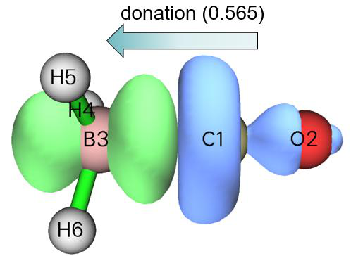
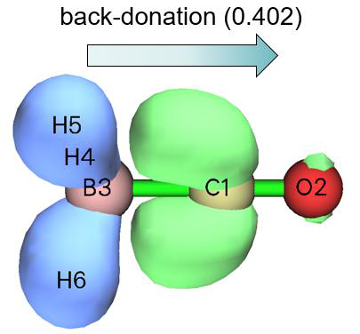
on console window
Sum of positive eigenvalues of selected pairs: 0.25072
Sum of energies of selected pairs: -7.09 kcal/mol
and you will see the following isosurface (isovalue = 0.001 a.u.)
The shape of the isosurface is complicated, and it is difficult to present a clear chemical interpretation on this collective interaction. However, we can still detect that there is some degree of back-donation from BH3 to CO, and electron density polarization occurs within each fragment region. Since the sum of energies of these NOCV pairs is merely -7.09 kcal/mol, the back-donation with polarization effects represented by NOCV pairs 4 to 26 do not play an important role.
Visualizing NOCV orbitals Next, I will show how to visualize NOCV orbitals, from which you can better understand how the density of NOCV pairs is constructed. Close GUI window, then input q to return to post-processing menu, then choose option “1 Show isosurface of NOCV orbitals”. Now NOCV information is printed on screen, and meantime a GUI window appears, in which you can select the NOCV orbital that you want to visualize via the list at bottom right corner, and you can also directly input the index of NOCV orbital in the text box at bottom right corner and then press ENTER button. The feature of this GUI is completely identical to that of main function 0 (see examples in Section 4.0 for more introduction about this interface).
From console window you can find NOCV pair 1 is composed of NOCV orbitals 1 and 51:
Pair Energy | Orbital Eigenvalue Energy | Orbital Eigenvalue Energy
1 -77.88 1 0.56514 -120.88 51 -0.56514 16.93
[...ignored]
So, in order to more deeply understand the character of NOCV pair 1, we should visualize orbitals 1 and 51. The isosurfaces of the two orbitals at isovalue of 0.15, as well as that of the NOCV pair 1 at isovalue of 0.01 a.u. are collectively shown below. From this map you can clearly recognize how the density of NOCV pair 1 results from eigenvalue-weighted orbital density of NOCV orbitals 1 and 51.
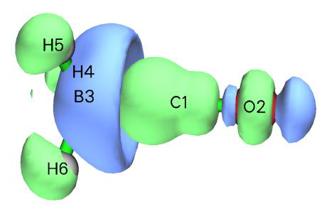
Usually, visualizing NOCV orbitals is not very useful since chemical meaning of NOCV orbitals is not quite strong.
Studying composition of NOCV pairs and orbitals Multiwfn is able to calculate composition of NOCV pairs and corresponding orbitals, this is useful if you hope to quantitatively look into their natures. Now we choose option “14 Calculate composition of NOCV orbitals and pairs”, the NOCV information is then printed on screen. Here we study composition of NOCV pair 1 and the related two NOCV orbitals, so we input 1, then you will see below output. The compositions are evaluated using SCPA method mentioned in Section 3.10.3, note that it is incompatible with diffuse functions.
Note: Only the basis functions and shells having absolute composition in the NO
CV pair or corresponding NOCV orbitals larger than 0.500 % are printed below.
The threshold can be changed via "compthres" parameter in settings.ini
Contribution of each basis function to NOCV pair/orbitals:
Basis Type Atom Shell Orb. 1 Orb. 51 Pair 1
1 S 1(C ) 1 0.09 % 1.13 % -0.58 %
2 S 1(C ) 2 1.05 % 4.09 % -1.72 %
4 Y 1(C ) 3 1.81 % 5.53 % -2.10 %
6 S 1(C ) 4 15.77 % 49.68 % -19.17 %
8 Y 1(C ) 5 5.07 % 5.06 % 0.00 %
19 Y 2(O ) 9 0.01 % 1.60 % -0.90 %
23 Y 2(O ) 11 0.02 % 0.68 % -0.37 %
32 S 3(B ) 14 9.89 % 9.27 % 0.35 %
34 Y 3(B ) 15 42.83 % 10.50 % 18.27 %
36 S 3(B ) 16 11.57 % 9.02 % 1.44 %
38 Y 3(B ) 17 4.37 % 1.23 % 1.77 %
47 S 4(H ) 20 1.99 % 0.09 % 1.07 %
49 S 5(H ) 22 1.97 % 0.09 % 1.06 %
51 S 6(H ) 24 1.97 % 0.09 % 1.06 %
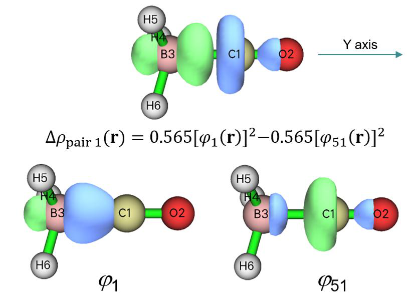
Contribution of each basis function shell to NOCV pair/orbitals:
Shell Type Atom Orb. 1 Orb. 51 Pair 1
1 S 1(C ) 0.09 % 1.13 % -0.58 %
2 S 1(C ) 1.05 % 4.09 % -1.72 %
3 P 1(C ) 1.81 % 5.53 % -2.10 %
4 S 1(C ) 15.77 % 49.68 % -19.17 %
5 P 1(C ) 5.07 % 5.06 % 0.00 %
9 P 2(O ) 0.01 % 1.60 % -0.90 %
11 P 2(O ) 0.02 % 0.68 % -0.37 %
14 S 3(B ) 9.89 % 9.27 % 0.35 %
15 P 3(B ) 42.83 % 10.50 % 18.27 %
16 S 3(B ) 11.57 % 9.02 % 1.44 %
17 P 3(B ) 4.37 % 1.23 % 1.77 %
18 D 3(B ) 0.55 % 0.09 % 0.26 %
20 S 4(H ) 1.99 % 0.09 % 1.07 %
22 S 5(H ) 1.97 % 0.09 % 1.06 %
24 S 6(H ) 1.97 % 0.09 % 1.06 %
Contribution of various types of shells to NOCV pair/orbitals:
Type Orb. 1 Orb. 51 Pair 1
s: 45.14 % 74.98 % -16.87 %
p: 54.10 % 24.59 % 16.67 %
d: 0.76 % 0.42 % 0.19 %
f: 0.00 % 0.00 % 0.00 %
g: 0.00 % 0.00 % 0.00 %
h: 0.00 % 0.00 % 0.00 %
Contribution of each atom to NOCV pair/orbitals:
Atom Orb. 1 Orb. 51 Pair 1
1(C ): 23.99 % 65.82 % -23.64 %
2(O ): 0.28 % 2.94 % -1.50 %
3(B ): 69.40 % 30.30 % 22.10 %
4(H ): 2.12 % 0.32 % 1.02 %
5(H ): 2.11 % 0.31 % 1.01 %
6(H ): 2.11 % 0.31 % 1.01 %
As you can see, the contributions to the NOCV pair 1 and to the corresponding NOCV orbitals 1 and 51 by various basis functions, shells, angular moments and atoms are outputted in turn. You can compare this information with the isosurface maps given earlier, you will find the quantitative compositions are indeed in agreement with the characteristics reflected by the isosurfaces. According to the definition of our employed 6-31G* basis set and contributions of basis functions, we can also estimate composition of various atomic orbitals in the NOCV pair and orbitals. For example, the 2nd and 6th basis functions are the second and third S type of basis functions of atom 4, they collectively represent 2s atomic orbital, so sum of their contributions to the NOCV pair
(−1.72% −19.17% = −20.89%) is just the composition of 2s atomic orbital in NOCV pair 1, which
is mainly responsible for the negative part of this NOCV pair. Similarly, you can find 2\(2p_z\) atomic orbital contributes to NOCV pair 1 by 18.27% +1.77% = 20.04%, it is the dominant contributor to the positive part of the NOCV pair; this is fully in line with the observation from the isosurface of NOCV pair 1, namely there is a green (positive) isosurface around the boron atom with two lobes extended along Y-axis, clearly it must be mainly composed of boron pz atomic orbital.0
Note that just like integral of a NOCV pair over the whole space must be exactly zero, the sum of compositions of a NOCV pair is also always zero.
Visualization of Pauli / orbital / total deformation density
To visualize the three kinds of deformation densities, we choose options “3 Show isosurface of Pauli deformation density”, “4 Show isosurface of orbital deformation density” and “5 Show isosurface of total deformation density”, respectively. The corresponding isosurface maps are collectively shown below
From the map of \(\Delta\rho^{\text{Pauli}}\) it is clear that Pauli repulsion makes electron density obviously decrease in the interaction region between CO and BH3. In contrast, the \(\Delta\rho^{\text{orb}}\) map shows that orbital interaction between the two fragments makes electron density significantly accumulate in the bonding region, and this is a typical signal of the formation of shared electron interaction. The
isosurface of Δρ exhibits that the overall effect of interfragment interaction results in considerable increase in electron density between CO and BH3.
It is worth to note in passing that \(\Delta\rho^{\text{orb}}\) corresponds to sum of all NOCV pair densities. In other words, if you select “2 Show isosurface of NOCV pair density” and then input indices of all NOCV
pairs, namely 1-26 in the present context, the resulting isosurface map will be exactly equal to \(\Delta\rho^{\text{orb}}\).
Visualization of promolecular / frozen state / actual complex orbitals If you are interested in understanding how Pauli repulsion deforms fragment orbitals, you can visually compare promolecular orbitals and frozen state orbitals, the former ones correspond to the original molecular orbitals (MOs) of the fragments (i.e. the union set of the MOs in CO.fch and BH3.fch), while the latter ones correspond to the MOs of the fragments after orthogonalization between the occupied orbitals of the fragments (for unoccupied fragment MOs, there is no difference
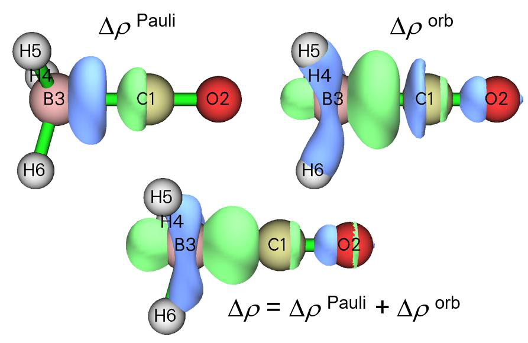
between them in promolecular state and frozen state).
To visualize promolecular orbitals, select option “11 Visualize promolecular orbitals” in post-processing menu; to visualize frozen state orbitals, select option “12 Visualize frozen state orbitals”. The option “13 Visualize actual complex orbitals” is used to directly visualize the orbitals recorded in the complex wavefunction file, namely COBH3.fch.
After selecting any of the aforementioned options, information of all occupied orbitals are shown in console window (see below), so that you can conveniently find the indices of the orbitals you want to visualize.
Orb: 1 Ene(au/eV): 0.000000 0.0000 Occ: 2.000000 Type:A+B
Orb: 2 Ene(au/eV): 0.000000 0.0000 Occ: 2.000000 Type:A+B
Orb: 3 Ene(au/eV): 0.000000 0.0000 Occ: 2.000000 Type:A+B
Orb: 4 Ene(au/eV): 0.000000 0.0000 Occ: 2.000000 Type:A+B
Orb: 5 Ene(au/eV): 0.000000 0.0000 Occ: 2.000000 Type:A+B
Orb: 6 Ene(au/eV): 0.000000 0.0000 Occ: 2.000000 Type:A+B
Orb: 7 Ene(au/eV): 0.000000 0.0000 Occ: 2.000000 Type:A+B
Orb: 31 Ene(au/eV): 0.000000 0.0000 Occ: 2.000000 Type:A+B
Orb: 32 Ene(au/eV): 0.000000 0.0000 Occ: 2.000000 Type:A+B
Orb: 33 Ene(au/eV): 0.000000 0.0000 Occ: 2.000000 Type:A+B
Orb: 34 Ene(au/eV): 0.000000 0.0000 Occ: 2.000000 Type:A+B
From the continuity of the orbital indices, we know from the above information that orbitals 1 to 7 and 8 to 30 correspond to occupied and unoccupied orbitals of fragment 1 (CO), respectively; while orbitals 31 to 34 and other ones correspond to occupied and unoccupied orbitals of fragment 2 (BH3), respectively. In the following figure I respectively plotted isosurfaces for MO 7 (HOMO of CO) in promolecular state and in frozen state, the isovalue is set to be a small value 0.02 so that you can clearly detect their difference
It is clear that due to Pauli repulsion effect, the HOMO of CO in frozen state has an additional nodal plane in the BH3 region as highlighted by the red dashed line, this is necessary for satisfaction of orthogonal condition between this orbital and all occupied orbitals of BH3.
This is the end of the analysis of the COBH3 system. In this section I have comprehensively illustrated usage of various options of the ETS-NOCV module, while in practical studies commonly you only need to focus on energies, eigenvalues and density isosurfaces of first several NOCV pairs.
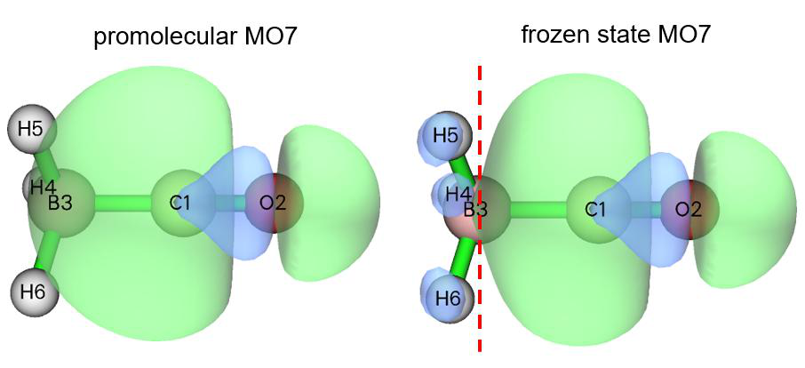
4.23.2 A simple open-shell instance: Ethane¶
In this section I use a simple molecule to illustrate ETS-NOCV analysis for open-shell
interaction. We will study how two ·CH3 radicals form an ethane (C2H6).
First, we optimize ethane and generate wavefunction files for it and the two ·CH3 radicals at B3LYP/6-31G* level. The steps are identical to the last section. The corresponding Gaussian input files and the resulting .fch files have been provided in “examples\ETS-NOCV\ethane” folder.
Evidently, the ·CH3 radicals should be set to doublet in the single point calculations.
Boot up Multiwfn and input examples\ETS-NOCV\ethane\ethane.fch
Multiwfn session
- Wavefunction file of the whole system 23 — ETS-NOCV analysis
- 2 — Two fragments
Multiwfn session
- examples\ETS-NOCV\ethane\CH3_1.fch — Wavefunction file of the first ·CH3 radical
- examples\ETS-NOCV\ethane\CH3_2.fch — Wavefunction file of the second ·CH3 radical
- n — Do not flip spin of the first ·CH3 radical
- y — Flip spin of the second ·CH3 radical
Unlike the closed-shell case exemplified in the last section, in the present example you are asked to choose if flipping spin of the two open-shell fragments. Flipping spin means exchanging information of alpha and beta electrons. Properly flipping spin is important, because we need to guarantee that sum of number of alpha (beta) electrons of all fragments is identical to that of the
whole system. The ethane has 9 alpha electrons and 9 beta electrons, while each ·CH3 radical has 5 alpha electrons and 4 beta electrons. Clearly, we need to flip spin of either the first or the second·CH3 radical, otherwise after combining the two fragments together there will be 5+5=10 alpha electrons and 4+4=8 beta electrons, which does not agree with ethane.
Next, we choose option -2 to generate NOCV orbital/pair energies, then information of NOCVs of both spins are shown on screen:
--------------- Pair and NOCV orbital information --------------
There are totally 42 NOCV pairs and 84 NOCV orbitals
NOCV orbitals with absolute eigenvalues smaller than 1.0E-03 are not shown
Note: All energies are given in kcal/mol
----- Alpha NOCV orbitals -----
Pair Energy | Orbital Eigenvalue Energy | Orbital Eigenvalue Energy
1 -93.24 1 0.44471 -117.62 42 -0.44471 92.06
2 -1.20 2 0.04959 -28.00 41 -0.04959 -3.76
3 -1.20 3 0.04959 -28.00 40 -0.04959 -3.76
4 -0.85 4 0.04192 8.65 39 -0.04192 28.92
5 -0.85 5 0.04192 8.65 38 -0.04192 28.92
6 -1.09 6 0.03679 -19.92 37 -0.03679 9.79
7 -0.48 7 0.02349 -4.18 36 -0.02349 16.23
8 -0.01 8 0.00125 -2808.79 35 -0.00125 -2799.86
----- Beta NOCV orbitals -----
Pair Energy | Orbital Eigenvalue Energy | Orbital Eigenvalue Energy
22 -93.24 43 0.44471 -117.62 84 -0.44471 92.06
23 -1.20 44 0.04959 -28.00 83 -0.04959 -3.76
24 -1.20 45 0.04959 -28.00 82 -0.04959 -3.76
25 -0.85 46 0.04192 8.65 81 -0.04192 28.92
26 -0.85 47 0.04192 8.65 80 -0.04192 28.92
27 -1.09 48 0.03679 -19.92 79 -0.03679 9.79
28 -0.48 49 0.02349 -4.18 78 -0.02349 16.23
29 -0.01 50 0.00125 -2808.79 77 -0.00125 -2799.86
Sum of NOCV eigenvalues: Alpha= 0.00000 Beta= 0.00000
Sum of pair energies: Alpha= -98.93 Beta= -98.93 Total= -197.86
The alpha and beta NOCV information shown above are seemingly identical, this is because the two fragments are symmetric with each other. The term “Sum of pair energies” indicates that
interfragment orbital interaction contributes to the binding energy between the two ·CH3 by nearly as large as -200 kcal/mol, each spin contributes to about -100 kcal/mol.
From above NOCV information one can see that for each spin only one NOCV pair plays a vital role, now we examine its character. Input the following commands
Multiwfn session
- 2 — Show isosurface of NOCV pair density
- 2 — Medium-quality grid
- 1 — Check NOCV pair 1, which is the dominant pair of alpha spin After inspecting the isosurface, we then close GUI window and input 22 to check NOCV pair 22, which is the dominant pair of beta spin. The isosurface maps of density of NOCV pair 1, pair 22 as well as their sum (corresponding to inputting 1,22 in the current interface) at isovalue of 0.01 a.u. are collective shown below, and the corresponding electron transfer character is indicated (q is amount of transferred electrons and corresponds to the absolute value of eigenvalues of NOCV pairs printed above).
As can be seen, NOCV pair 1 mainly exhibits transfer of alpha electrons from the first ·CH3 fragment (composed of C1, H2, H3 and H4) to the second ·CH3 fragment (composed of C5, H6, H7 and H8), it is due to the mix of singly occupied alpha orbital of the first ·CH3 and unoccupied alpha orbital(s) of the second ·CH3. NOCV pair 22 exhibits a similar feature as NOCV pair 1, but it corresponds to electron transfer of beta electrons and the direction is opposite. The sum of NOCV pairs 1 and 22 corresponds to the concentration of electron density in the bonding region between the two fragments, this is the very typical character of formation of a covalent bond. From the map above we can also find that the increase or decrease of electron density at the two ends of the ethane due to orbital interaction of each spin is basically cancelled when NOCV densities of the two spins
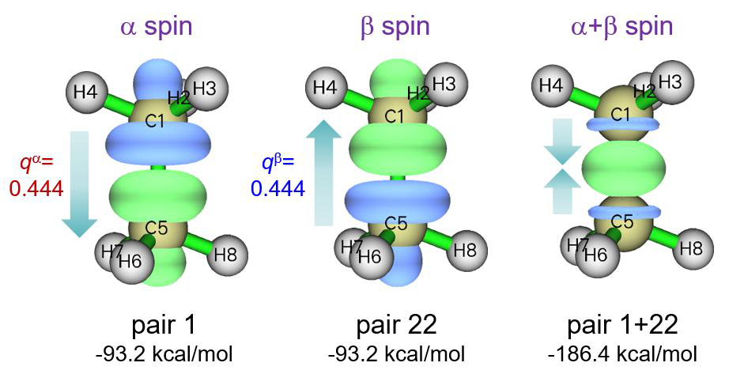
are summed up.
Let us also check NOCV pairs 2 and 3, they are degenerated and correspond to minor orbital interaction of alpha spin, each one merely contributes energy of -1.2 kcal/mol to the interfragment binding. The isosurfaces of 0.0015 a.u. are shown below
These interactions are seemingly caused by hyperconjugation from occupied σ(C-H) orbitals to unoccupied π(C-C) orbital, since electron density is decreased in the hydrogen areas while increased in the region of C-C bond and there is a nodal plane along the bond. This interaction character can be identified more clearly if you visualize the corresponding NOCV orbitals. It is generally
recognized that the two ·CH3 fragments in ethane are binded by a σ bond, this is in line with our observation that these concomitant σ(C-H)→π(C-C) interactions only have trivial energy contributions and negligible NOCV eigenvalues (0.049).
If you have interest, you can use option 1 in post-processing menu to visualize NOCV orbitals that constituting the aforementioned NOCV pairs as we did in the last section, you will gain a richer insight into the orbital interactions; specifically, for a NOCV pair displaying a strong electron transfer character, you can discuss the orbitals playing donor and acceptor role respectively by visual inspection of NOCV orbital isosurfaces.
4.23.3 An open-shell system with multiple bond: Ethene¶
In this section we use ETS-NOCV theory to study the double bond interaction between the two CH2 in ethene. It is best to regard the CH2 in current analysis as triplet, not only because it is well known that CH2 carbene in isolated state has ground state of triplet, but more importantly, two CH2
can form double bond only when they are in triplet with different spins (namely CH2 and CH2), in this status CH2 has an unpaired electron occupied in the orbital parallel to the fragment plane and another unpaired electron occupied in the orbital perpendicular to the fragment.
Now generate wavefunction files for ethene and its two CH2 fragments as last example at B3LYP/6-31G* level, the corresponding Gaussian input files and .fch files have been provided in “examples\ETS-NOCV\ethene” folder.
Boot up Multiwfn and input examples\ETS-NOCV\ethene\ethene.fch
Multiwfn session
- Wavefunction file of the ethene 23 — ETS-NOCV analysis
- 2 — Two fragments examples\ETS-NOCV\ethene\CH2_1.fch
- Wavefunction file of the first CH2 fragment examples\ETS-NOCV\ethene\CH2_2.fch — Wavefunction file of the second CH2 fragment
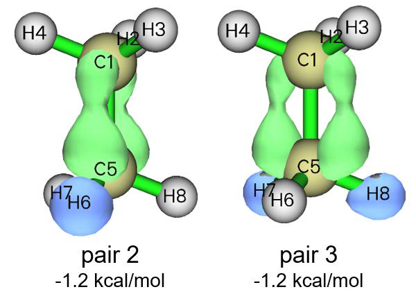
Multiwfn session
- n — Do not flip spin of the first CH2 fragment y
- Flip spin of the second CH2 fragment -2 — Generate Fock/KS matrix and evaluate NOCV orbital energies Now we can see
--------------- Pair and NOCV orbital information --------------
There are totally 38 NOCV pairs and 76 NOCV orbitals
NOCV orbitals with absolute eigenvalues smaller than 1.0E-03 are not shown
Note: All energies are given in kcal/mol
----- Alpha NOCV orbitals -----
Pair Energy | Orbital Eigenvalue Energy | Orbital Eigenvalue Energy
1 -63.11 1 0.57168 -125.97 38 -0.57168 -15.57
2 -99.78 2 0.38673 -101.82 37 -0.38673 156.21
3 -2.28 3 0.07016 -66.15 36 -0.07016 -33.70
4 -1.64 4 0.05624 13.27 35 -0.05624 42.50
5 -1.73 5 0.04700 -26.85 34 -0.04700 9.99
6 -0.48 6 0.02675 -62.39 33 -0.02675 -44.32
7 -0.01 7 0.00136 -2733.67 32 -0.00136 -2723.71
----- Beta NOCV orbitals -----
Pair Energy | Orbital Eigenvalue Energy | Orbital Eigenvalue Energy
20 -63.11 39 0.57168 -125.97 76 -0.57168 -15.57
21 -99.78 40 0.38673 -101.82 75 -0.38673 156.21
22 -2.28 41 0.07016 -66.15 74 -0.07016 -33.70
23 -1.64 42 0.05624 13.27 73 -0.05624 42.50
24 -1.73 43 0.04700 -26.85 72 -0.04700 9.99
25 -0.48 44 0.02675 -62.39 71 -0.02675 -44.32
26 -0.01 45 0.00136 -2733.67 70 -0.00136 -2723.71
Sum of NOCV eigenvalues: Alpha= 0.00000 Beta= 0.00000
Sum of pair energies: Alpha= -169.05 Beta= -169.05 Total= -338.09
For each spin, only two NOCV pairs correspond to prominent orbital interactions. We use option 2 to visualize density of the corresponding NOCV pairs, the isosurface maps at isovalue = 0.01 a.u. are collectively shown below, the electron transfers corresponding to these NOCV pairs are highlighted by arrows
It can be seen that NOCV pairs 1 and 2 represent π and σ interactions of alpha electron, respectively; the counterparts of beta spin are NOCV pairs 20 and 21. The sum of NOCV pairs 1
and 20 corresponds to total π interaction, from the corresponding density isosurface map shown above it is seen that this interaction leads to significant increase in electron density above and below
the C-C bond. The character of C-C σ interaction in ethene is very similar to that of ethane, which has been discussed in last section. From NOCV pair energies, one can find that energy contribution
to binding between the two CH2 owing to π interaction (-126.2 kcal/mol) is considerably weaker than σ interaction (-199.6 kcal/mol). It is worth to note that the σ interaction in ethene is slightly stronger than that in ethane (-186.4 kcal/mol, as shown in last section), this may be the synergistic
effect between σ and π interactions.
4.23.4 Weak interaction instance: A-T base pair¶
In this example we use ETS-NOCV to analyze weak interaction. In the adenine-thymine (A-T) base pair it is known that there are two H-bonds between the two molecules, as shown by the dashed lines below, which will be subjected to ETS-NOCV analysis.
The geometry of A-T base pair was taken from JSCH-2005 test set (Phys. Chem. Chem. Phys.,
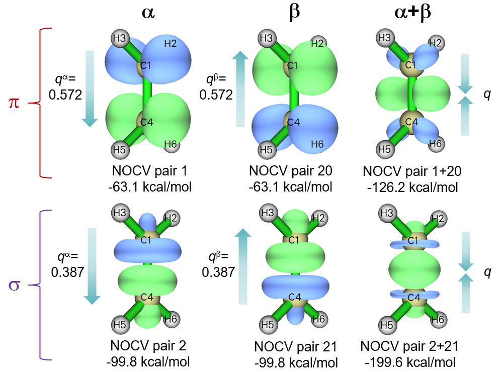
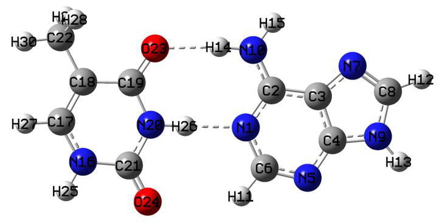
8, 1985 (2006)), it was already optimized at proper level so we will not optimize it further. In this
example we will use ORCA 5.0 program to conduct single point calculations at ωB97M-V/def2-TZVP level, of course you can also use other codes such as Gaussian to carry out the calculations. The ORCA input files for dimer and the two monomers are AT.inp, A.inp and T.inp in “examples\ETS-NOCV\AT” folder. After running them, use “orca_2mkl” utility in ORCA package to convert the resulting .gbw files to Molden input files; if you do not know how to do, please check beginning of Chapter 4. The generated AT.molden, A.molden and T.molden can be downloaded at http://sobereva.com/multiwfn/extrafiles/A-T_base_pair_molden.zip.
Multiwfn session
- Boot up Multiwfn and input AT.molden — Wavefunction file of A-T base pair
- 23 — ETS-NOCV analysis
- 2 — Two fragments A.molden
Wavefunction file of thymine (T) fragment
Multiwfn session
- -2 — Generate Fock/KS matrix and re-evaluate NOCV orbital energies Currently, there are as many as 40 NOCV pairs printed on screen under the default printing threshold (NOCV eigenvalue > 0.001), the number is too large to easily inspect. So, we properly raise printing threshold, input
Multiwfn session
- -3 — Set printing threshold of NOCV eigenvalues 0.02
- 0 — Print NOCV information again Now the number of printed NOCV pairs is significantly reduced:
--------------- Pair and NOCV orbital information --------------
There are totally 328 NOCV pairs and 655 NOCV orbitals
NOCV orbitals with absolute eigenvalues smaller than 2.0E-02 are not shown
Note: All energies are given in kcal/mol
Pair Energy | Orbital Eigenvalue Energy | Orbital Eigenvalue Energy
1 -11.20 1 0.20598 -15.91 655 -0.20598 38.45
2 -4.05 2 0.11820 -18.61 654 -0.11820 15.66
3 -0.79 3 0.07198 -91.72 653 -0.07198 -80.71
4 -0.79 4 0.07066 -77.74 652 -0.07066 -66.59
5 -0.59 5 0.04312 -29.08 651 -0.04312 -15.45
6 -0.34 6 0.03551 -40.19 650 -0.03551 -30.49
7 -0.27 7 0.02859 -24.18 649 -0.02859 -14.72
8 -0.15 8 0.02619 -56.34 648 -0.02619 -50.77
9 -0.15 9 0.02032 -16.97 647 -0.02032 -9.45
Sum of NOCV eigenvalues: -0.00000
Sum of pair energies: -18.33 kcal/mol
As can be seen, only NOCV pairs 1 and 2 correspond to notable orbital interactions, and their energies are lower than common NOCV pairs corresponding to chemical bond interactions by at least one order of magnitude. Isosurface maps of their densities are exhibited below, and the total density of all other NOCV pairs are also given. The isovalue is set to a very small value 0.002 a.u., which is significantly smaller than that adopted in the last few sections because orbital interaction
corresponding to H-bond is by far weaker than chemical bond interaction (in fact, as clearly indicated in my work J. Comput. Chem., 40, 2868 (2019), H-bond of common strength is dominated by electrostatic interaction)
From the map above we can see that the NOCV pairs 1 and 2 mainly represent the orbital
(CO)\((CO)_{5}Cr=CH_{2}\)
All other NOCV pairs, as shown by sum of NOCV pairs 3 to 328 in the map above, mostly
correspond to marginal transfer of π electron from H-bond donor atom to H-bond acceptor atom. Since the corresponding total energy is very small, I will not explore it any further.
4.23.5 Transition metal coordinate instance: (CO)\((CO)_{5}Cr=CH_{2}\)
In this example, we use ETS-NOCV to study a transition metal coordinate, (CO)\((CO)_{5}Cr=CH_{2}\), which will be partitioned as two fragments (CO)5Cr and CH2 to study coordinate bond between them.
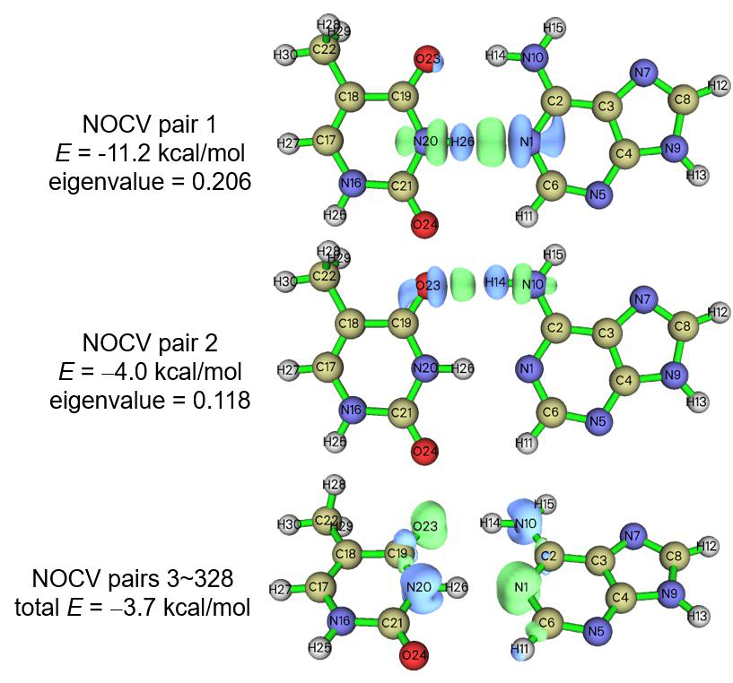
Gaussian 16 is used for calculations in this example. SDD pseudopotential with corresponding standard valence basis set is employed for Cr, and 6-311G* is employed for ligand atoms, TPSSh exchange-correlation functional is used because it is usually an ideal choice for coordinates containing 3d metals. This combination of theoretical method and basis set is suitable for most transition metal coordinate systems. We optimize the whole coordinate first to obtain its wavefunction file (CO)5CrCH2.fch, after that we extract coordinates of the two fragments and then perform single point tasks to obtain their wavefunction files (CO)5Cr.fch and CH2.fch. The Gaussian input files as well as the resulting .fch files have been provided in “examples\ETS-NOCV(CO)5CrCH2\” folder.
It is worth to note that if you use different basis sets in the calculation of fragments and whole system like this example (“genecp” for coordinate but 6-311G* for CH2 ligand), and you are not familiar with the default rule of adapting Cartesian and spherical-harmonic basis functions in Gaussian, it is strongly suggest to always add 5d keyword in your input files to guarantee that all calculations use spherical-harmonic basis functions, otherwise the sum of number of basis functions of all fragments may be different to the number of basis function of the whole system.
It is important to properly choose electronic states in the present investigation. The Cr atom in the whole coordinate and in the (CO)5Cr fragment should be in low-spin (all six 3d electrons are paired), so spin multiplicity of the whole coordinate and (CO)5Cr should be set to 1 during calculations. Even though ground state of CH2 is known to be triplet, in order to perform ETS-NOCV analysis for this system, we must adopt singlet for CH2 in its single point calculation, because this state is more close to actual electronic structure of CH\((CO)5CrCH2\) than triplet (it is naturally expected that singlet CH2 utilizes its lone pair to form coordinate bond with unoccupied 3d orbital of the low-spin Cr atom).
Now boot up Multiwfn and input examples\ETS-NOCV(CO)5CrCH2(CO)5CrCH2.fch
Multiwfn session
- 23 — ETS-NOCV analysis
- 2 — Two fragments examples\ETS-NOCV(CO)5CrCH2(CO)5Cr.fch
- Fragment 1 examples\ETS-NOCV(CO)5CrCH2\CH2.fch — Fragment 2
- -2 — Generate Fock/KS matrix and evaluate NOCV orbital energies The NOCV information currently shown on screen is
Pair Energy | Orbital Eigenvalue Energy | Orbital Eigenvalue Energy
1 -42.57 1 0.94516 -139.72 247 -0.94516 -94.68
2 -72.70 2 0.71995 -114.71 246 -0.71995 -13.74
3 -3.49 3 0.16177 -28.10 245 -0.16177 -6.51
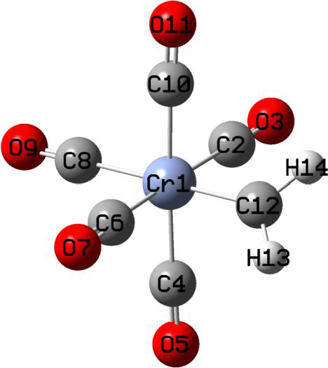
5 -0.58 5 0.05439 -52.30 243 -0.05439 -41.65
6 -0.77 6 0.04558 54.27 242 -0.04558 71.17
[...ignored]
It is seen that NOCV pairs 1 and 2 have by far larger energy contributions to formation of the coordinate bond between the two fragments than other NOCV pairs, so we will only focus on them. Now use option 2 to visualize density isosurface of the two NOCV pairs respectively, the corresponding isosurface map at isovalue of 0.01 a.u. are shown below
It is suggested to choose “High-quality grid” after selecting option 2 since the current system is not quite small. The isosurface will be somewhat jagged if selecting “Medium-quality grid”. When you find current grid setting is inappropriate after visualizing the isosurfaces, you can return to post-processing menu and choose option “-5 Set grid for calculation of various densities” to redefine grid setting for visualization next time.
From the shape and color of the isosurfaces it is clear that NOCV pair 2 exhibits electron donation character from the lone pair of singlet CH2 to empty dz2 orbital of Cr, while NOCV pair 1 displays electron back-donation from an occupied 3d orbital to the unoccupied orbital of CH2
perpendicular to its fragment plane. The former corresponds to formation of a σ bond, its energy contribution to binding (-72.7 kcal/mol) is markedly larger than the latter (-42.6 kcal/mol), which
shows π character. It is very common that σ interaction is stronger than single set of π interaction for the same bond, this point is also reflected by our observation in the example of ethene in Section
4.23.3. However, according to NOCV pair eigenvalues, it is noted that the π-type of back-donation interaction causes larger variation of electron density than the σ-type of donation interaction. It is worth to emphasize in passing here that there is no necessarily positive correlation between NOCV eigenvalues and NOCV energies.
4.23.6 More than two fragments instance: Transition state of trimerization of acetylene¶
ETS-NOCV can also be employed to more than two fragment cases, and can also be applied to structures other than minima of potential energy surface, such as transition state. In this example, I use transition state (TS) of trimerization of acetylene as an instance to show this point. This reaction is illustrated in the following scheme, the TS geometry in the figure was optimized at B3LYP/6-31G* level. We will analyze how the three bent acetylene interact with each other at TS structure owing to orbital interactions.
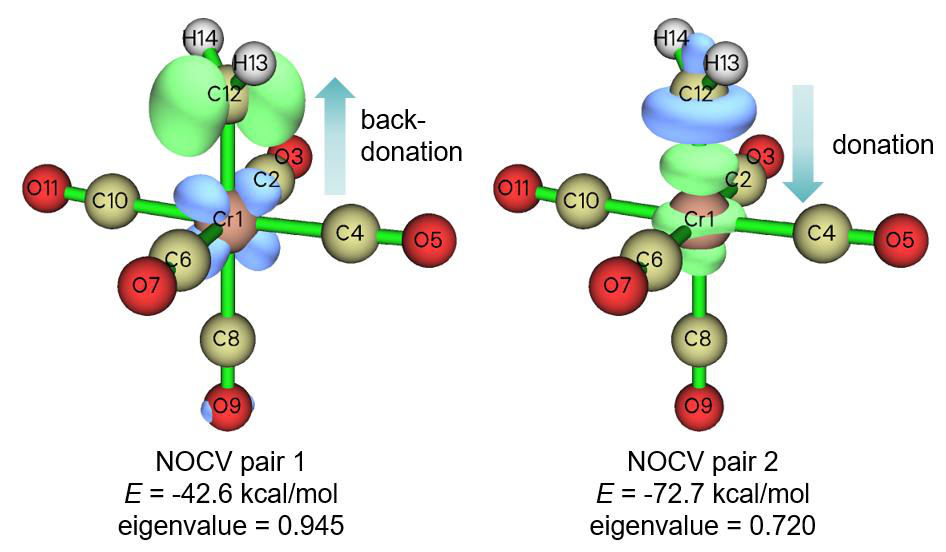
The TS.gjf in “examples\ETS-NOCV\C2H2_trimerization_TS” folder is Gaussian input file of single point task for pre-optimized TS geometry. The 1.gjf, 2.gjf and 3.gjf in this folder correspond to single point task for the three distorted acetylene molecules at the TS geometry. Calculation level in all files is B3LYP/6-31G*, which is sufficient for obtaining qualitatively reasonable ETS-NOCV result. Run these files and convert the resulting .chk files using formchk utility, then you will obtain the .fch files in this folder.
Boot up Multiwfn and input examples\ETS-NOCV\C2H2_trimerization_TS\TS.fch
Multiwfn session
- 23 — ETS-NOCV analysis
- 3 — Three fragments examples\ETS-NOCV\C2H2_trimerization_TS\1.fch
- Fragment 1 examples\ETS-NOCV\C2H2_trimerization_TS\2.fch — Fragment 2 examples\ETS-NOCV\C2H2_trimerization_TS\3.fch
- Fragment 3 -2 — Generate Fock/KS matrix and evaluate NOCV orbital energies Then you will see
There are totally 51 NOCV pairs and 102 NOCV orbitals
NOCV orbitals with absolute eigenvalues smaller than 1.0E-03 are not shown
Note: All energies are given in kcal/mol
Pair Energy | Orbital Eigenvalue Energy | Orbital Eigenvalue Energy
1 -25.50 1 0.57545 -95.07 102 -0.57545 -50.76
2 -25.50 2 0.57545 -95.07 101 -0.57545 -50.76
3 -0.93 3 0.09515 -66.85 100 -0.09515 -57.12
4 -0.93 4 0.09515 -66.85 99 -0.09515 -57.12
5 -1.31 5 0.07688 -114.89 98 -0.07688 -97.89
6 -1.50 6 0.07168 62.87 97 -0.07168 83.83
7 -0.33 7 0.03245 3.82 96 -0.03245 14.08
8 -0.33 8 0.03245 3.82 95 -0.03245 14.07
9 -0.13 9 0.02029 -0.40 94 -0.02029 6.16
[...ignored]
It can be seen that NOCV pairs 1 and 2 are degenerated, isosurface maps of their densities at isovalue of 0.005 a.u. are shown below, their sum is also given
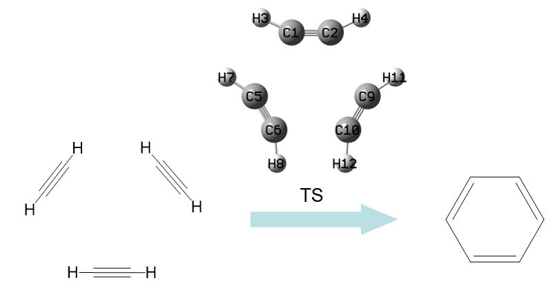
The NOCV pairs 1 and 2 have identical energies because this system has point group of D3h symmetry, which is a rotation group. From the isosurface map it is obvious that neither NOCV pair 1 nor pair 2 makes sense, but the sum of them is meaningful. As shown in the third subgraph in
above figure, in the TS geometry there has been σ-bond interaction to some extent between neighbouring acetylene, as evident electron concentration is detectable in the area where new C-C bond will form. Also note that blue isosurfaces in this subgraph show that electron density is
decreased in the in-plane π regions of C-C bonds in acetylene, clearly indicating that new σ C-C bonds between acetylene are formed at the expense of the original in-plane π bonds.
It is known that in the product of acetylene trimerization reaction, namely in the benzene
molecule, every C-C bond has some degree of π interaction, a question naturally arises: whether the π interaction between acetylene has also been formed at the TS structure? To explore this point, we check isosurfaces of other NOCV pairs, we will quickly find only NOCV pairs 3 and 4 show π character, as shown by their density isosurfaces below. Individually visualizing NOCV pair 3 or 4 in fact is meaningless, so we also plot isosurface of sum of densities of the two pairs, as shown in the third subgraph in the following figure; however, the isosurface can be clearly visualized only when isovalue is set to a fairly small value (0.0002 a.u.).
Isosurface of sum of NOCV pairs 3 and 4 indicates that indeed there has been π interaction between neighbouring acetylene, since green isosurfaces can be found in the π regions above and below the new C-C bonds to be formed. However, since the energy is merely -1.85 kcal/mol, and
the isosurface is detectable only at extremely small density isovalue, the π interaction between acetylene is completely negligible in practice. This argument can also be supported by calculation
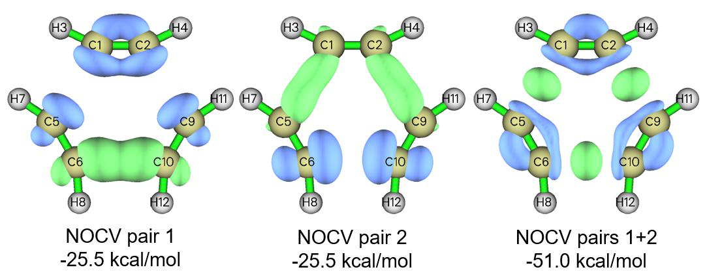
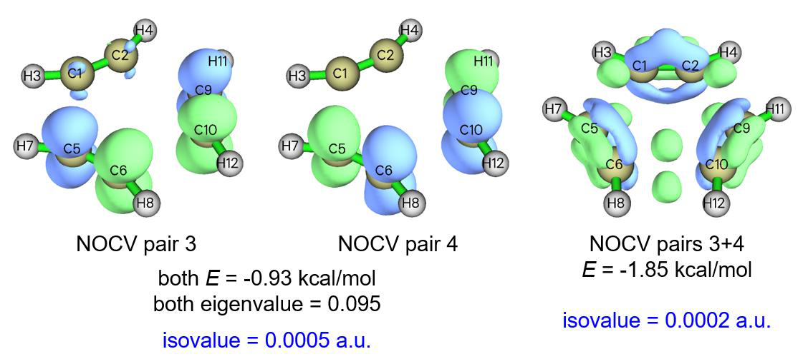